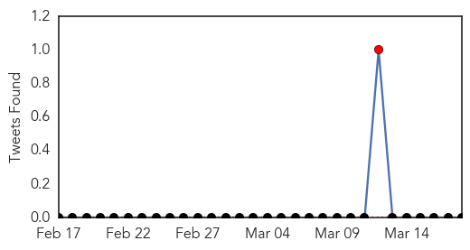
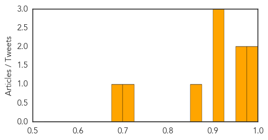

Meningitis
30-Day Web Trend
3 alerts, 0 warnings

30-Day Twitter Trend
1 alerts, 0 warnings

Article Locations

Article Confidences

Top Articles:
- 0.998
- Meningitis death tied to Princeton outbreak
- 0.996
- Same Meningitis Strain Behind Drexel, Princeton Outbreaks
- 0.995
- Drexel University Student Who Died From Meningitis Was Infected With Princeton Strain
- 0.995
- Same Meningitis Strain Behind Drexel, Princeton Outbreaks: CDC
- 0.994
- Meningitis strain from Princeton University outbreak kills Drexel student
- 0.981
- Meningitis Causing Drexel Student Death Same Strain as Princeton Outbreak
- 0.926
- Drexel Student Died From Meningitis B Strain Found in Princeton Outbreak; CDC Concludes
- 0.894
- Meningitis death tied to Princeton outbreak strain
- 0.872
- Meningitis death tied to Princeton outbreak strain
- 0.871
- Meningitis Death Tied to Princeton Outbreak Strain
- 0.870
- Drexel Student Died Of Same Meningitis Strain Found At Princeton « CBS Philly
- 0.800
- Meningitis B outbreak at Princeton may be linked to Drexel sorority sister's death
- 0.779
- Novartis to seek OK for vaccine for meningitis type B, which killed Upper St. Clair woman
- 0.710
- Novartis' Bexsero meningitis B vaccine approved for infants and adolescents in Australia
Top Tweets:
-
No tweets found for Mar 18, 2014
Measles
30-Day Web Trend
0 alerts, 2 warnings

30-Day Twitter Trend
0 alerts, 0 warnings

Article Locations
Article Confidences
Top Articles:
- 0.986
- State health managers urge measles vaccination
- 0.983
- Measles outbreak spreads to Burnaby from Chilliwack
- 0.973
- which adults should get vaccinated?
- 0.969
- Measles Outbreak Grows to 20 Cases in NYC
- 0.919
- Measles spreading in both New York and California
- 0.904
- Measles Outbreaks Coast to Coast
- 0.902
- Measles case in Manitoba worries parents of young children
- 0.869
- 14 of California's 32 measles cases this year were intentionally unvaccinated
- 0.710
- Measles keep kids out of school for another week
- 0.695
- Measles strikes in B.C and New York
Top Tweets:
-
No tweets found for Mar 18, 2014